La mathématisation de l'art
les avancées technologiques dans l'art européen
Préhistoire
Non mais là franchement y'a pas de maths. C'est des bisons. C'est juste des bisons.
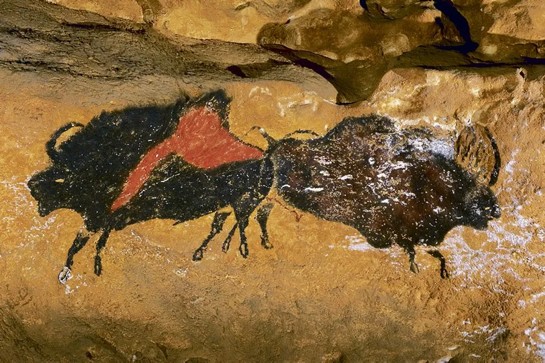
Mathématique subtile au Médiéval
En fait, c'est surtout de la géométrie. Dans le cas de l'Abbey St.Denis (c.1140), la mathématique est au service du pragmatisme: on construit une arche plus pointue car elle permet de distribuer le poids de la tour de façon plus efficace, permettant de construire avec plus de hauteur, ce qui est un but majeur dans la constructions d'immeubles à office religieuse.
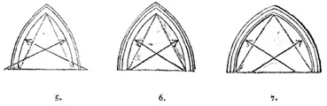
Mais cette mathématique, c'est de la géométrie simple, sans formalisme: c'est plus le résultat d'experimentations multiples que de découverte systématique comme la mathématique d'aujourd'hui. Autrement dit, on ne commence pas avec des a priori pour ensuite, après réflection et étapes logiques, arriver à un résultat composé de ces a priori.
Par exemple, dans le journal d'un dénommé Villard de Honnecourt, qui vivait au 13è siècle, on trouve des mécanismes primitifs, sans calculs, le produit d'intuition simple:
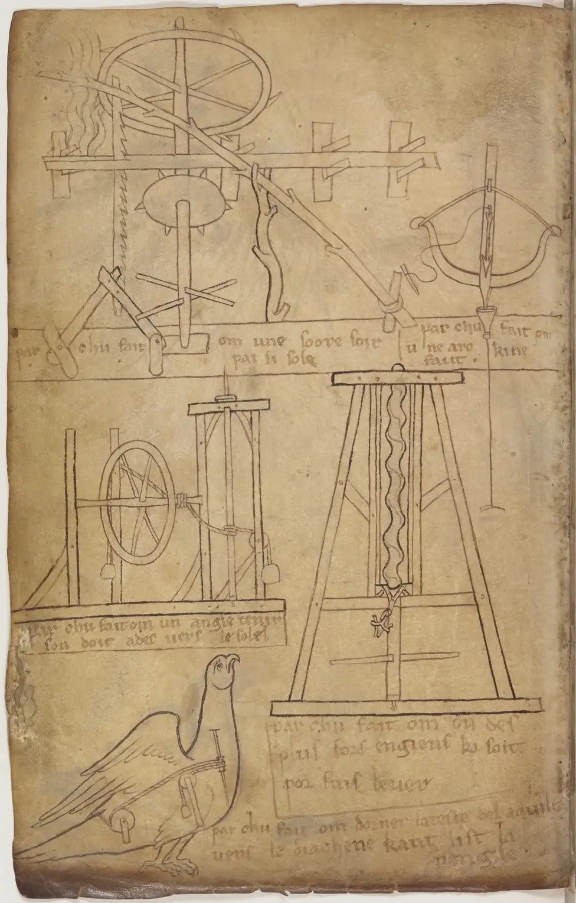
La géométrie sert aussi à refléter la théologie de l'époque, qui voit en la Terre un exemple d'ordre divin. La rosace de la cathédrale de Chartres est censée le refléter:
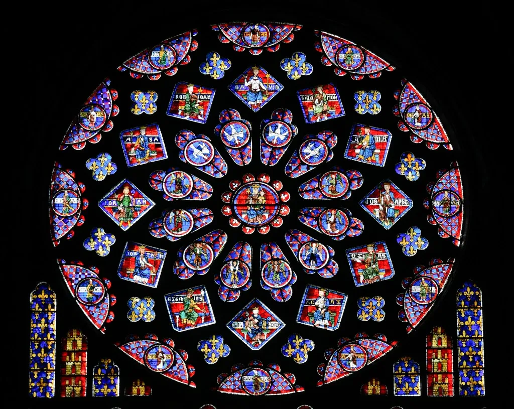
La musique est considérée comme art mathématique. Avec l'arithmétique, la géométrie et l'astronomie, elle forme le Quadrivium, la compilation des 4 sujets les plus hauts-placés de l'éducation médiévale. La mathématique de la musique, qui s'opère dans les cloches de monastères ou les orgues de cathédrales, c'est celle des intervalles.
Comme avec l'architecture ou la géométrie des rosaces, c'est surtout des maths par accident. On sait depuis Pythagore que certains intervalles sont particulièrement harmonieux.
Nous n'avons donc pas encore de formalisme mathématique.
La Renaissance
Là, on commence a avoir de l'intention! Pendant la Renaissance, les mathématiques deviennent l'échafaudages de l'art, mathématiques qui d'ailleurs connaissent une véritable renaissance avec la découverte de nombreux concepts qu'on utilise aujourd'hui.
La perspective linéaire est la découverte de cette époque.
À l'époque médiévale, la taille des figures correspond à leurs importance, pas à leur distance par rapport au voyeur: on ne prend même pas en compte le voyeur. Prendre en compte le voyeur implique réfléchir d'une manière méta, ou en mise en abîme, en quelque sorte. C'est apparemment un saut cognitif que de s'imaginer à quoi va resembler notre tableau de l'extérieur.
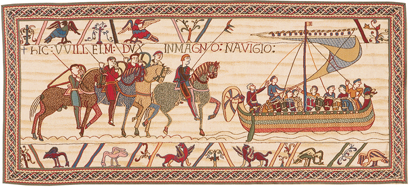
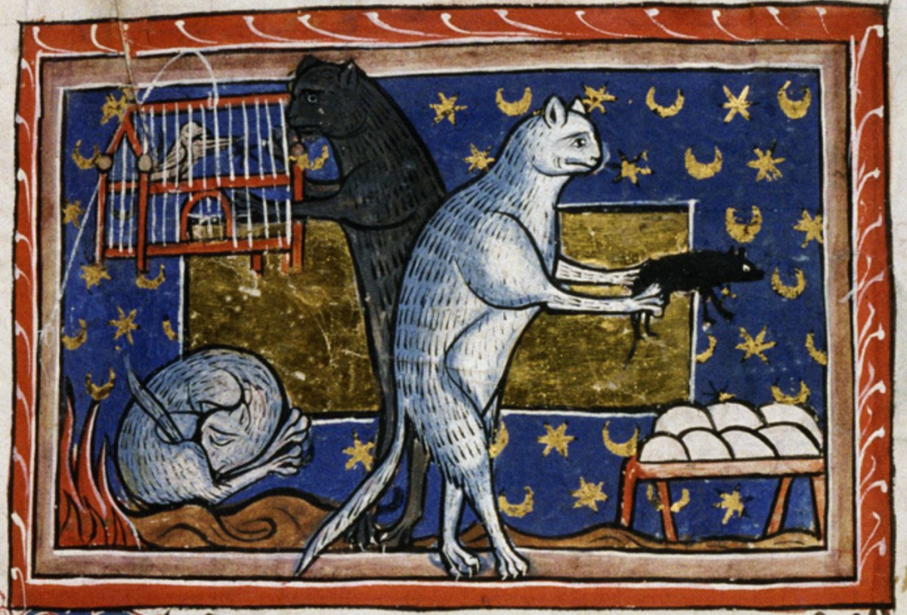
C'est apparemment aussi un saut cognitif que de peindre pour représenter la réalité comme elle en a l'air dans la vraie vie. Ainsi, l'architecte Filippo Brunelleschi serait le premier à conceptualiser les lignes de fuites, en 1420.
Il peint une image de la Baptistery et démontre comment, quand on l'admire depuis un trou de serrure et un miroir, la réplique ressemble exactement à son modèle (depuis un angle précis. V'là pas encore le cubisme).
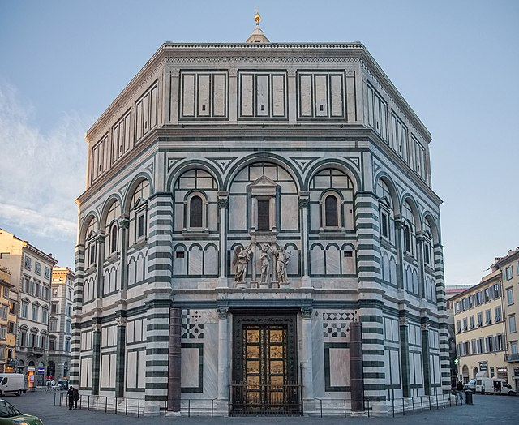
L'innovation de Brunelleschi, c'est d'utiliser une seule ligne de fuite, donc cette angle précis depuis le trou de serrure, pour calibrer la peinture entière.
C'est du mathématique! La ligne de fuite est ...
C'est en 1427 que le peintre Masaccio appliquera la géométrie de Brunelleschi dans sa Sainte Trinité, en Florence. Il utilise une grille gravée dans le plâtre même pour construire l'illusion d'une chapelle profonde derrière sa scène de crucifixion.
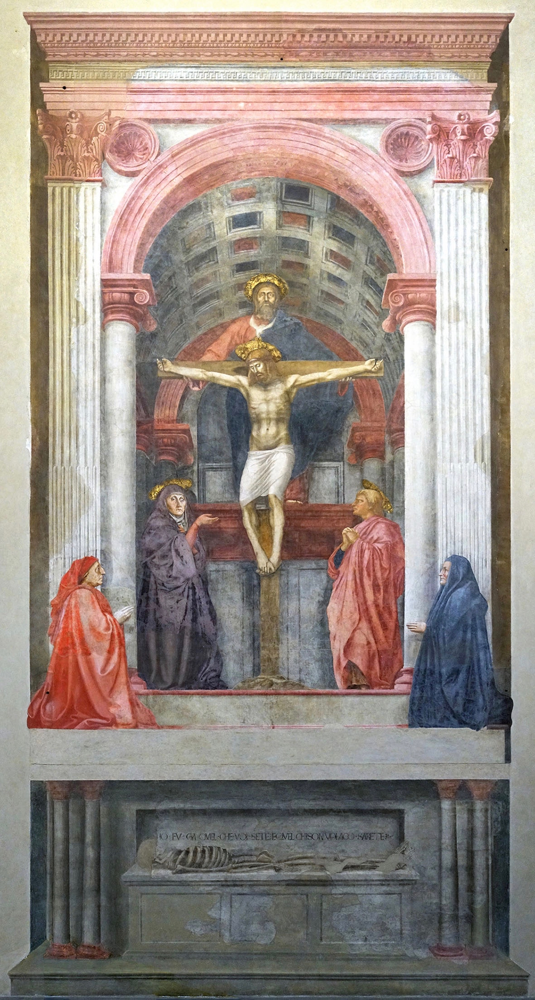
Toutes les lignes orthogonales de l'image converge vers UNE ligne ici, supposément au niveau d'un voyeur adulte.
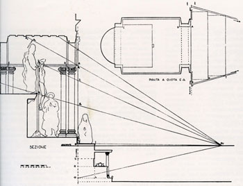
Ainsi la fresque donne l'impression d'être une continuation de l'architecture de l'église, tel un tunnel de pierre creusé dans le mur. Chaque élément de la peinture est sujet à la transformation mathématique qui rend hyperbolique la taille de toute chose jusqu'à "l'équateur" de la peinture.
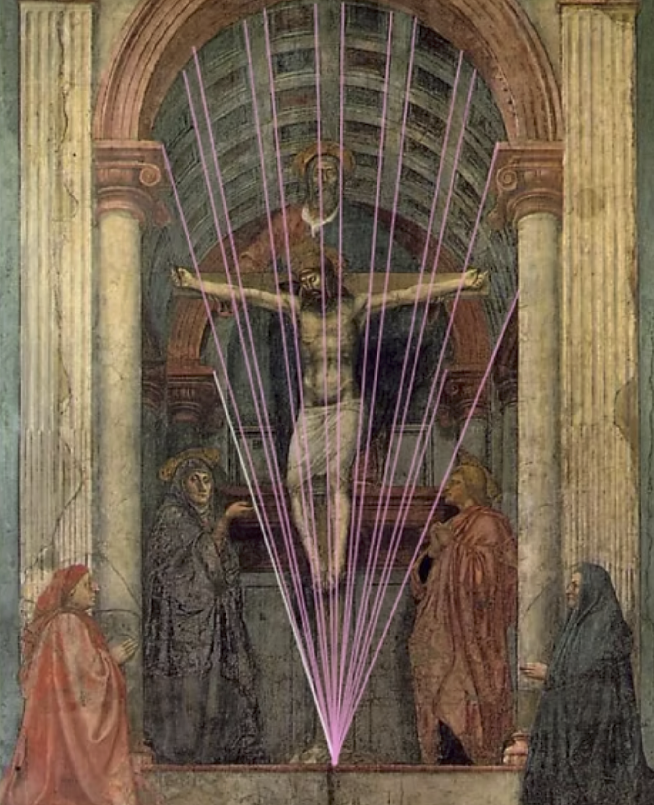
Dans son livre De Pictura, Leon Battista Alberti formalise la perspective, qu'il décrit comme une technique de "fenêtre ouverte". (1435)
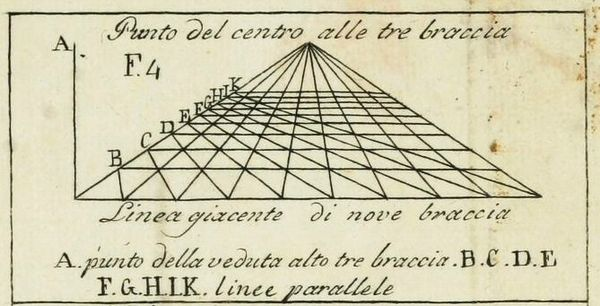
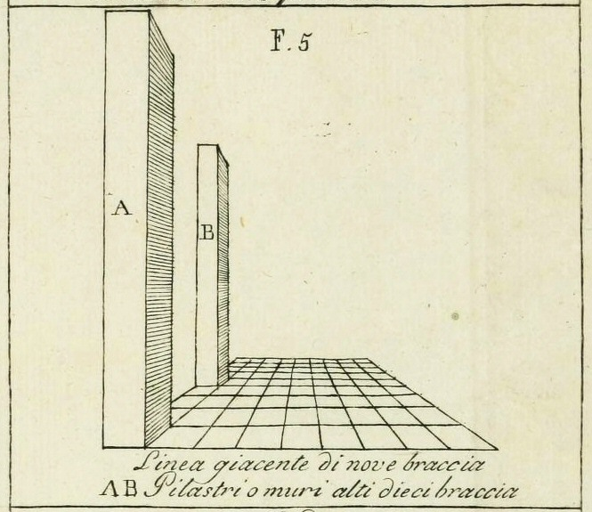
Ce qui nous donne des peintures célèbres telles que:
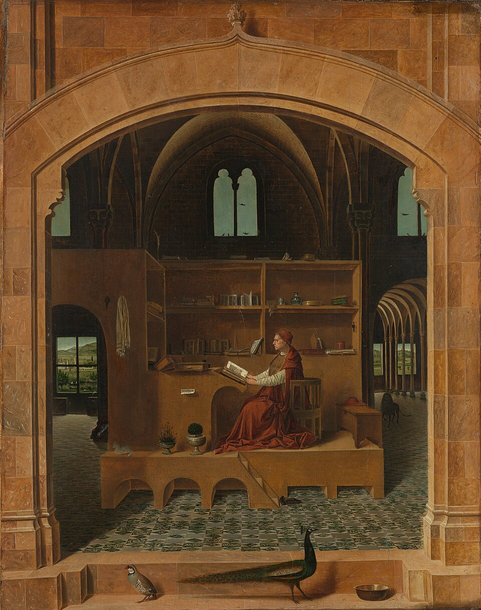
Ou:
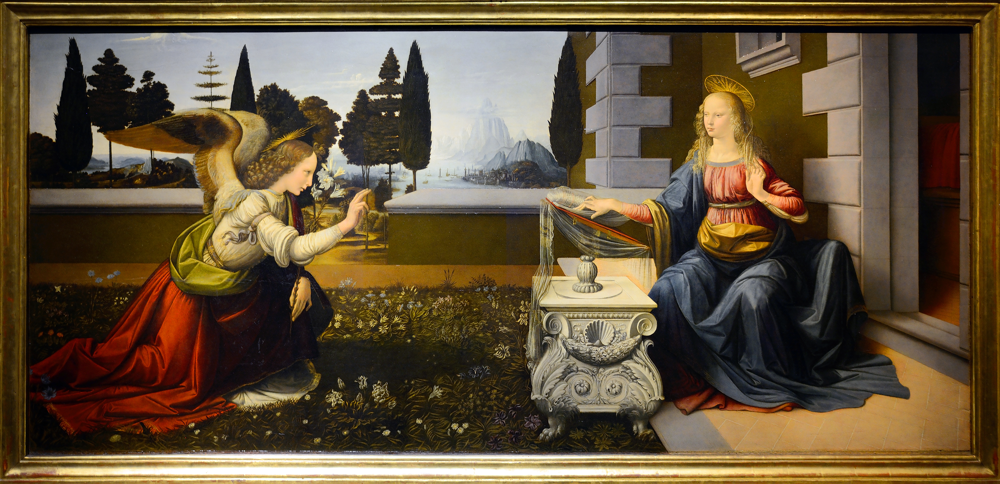
La perspective devient aussi un instrument narratif: Leonard de Vinci mettra ainsi le Christ au centre de sa ligne de fuite dans La Scène. La perspective est aussi un problème de géométrie: dans sa Flagellation du Christ, Piero peindra avec une extraordinaire fidélité sa ligne de fuite, qu'on étudie encore pour sa précision.
Piero étudiera même le concept de multiples lignes de fuites, ce qui préfigure la géométrie moderne.
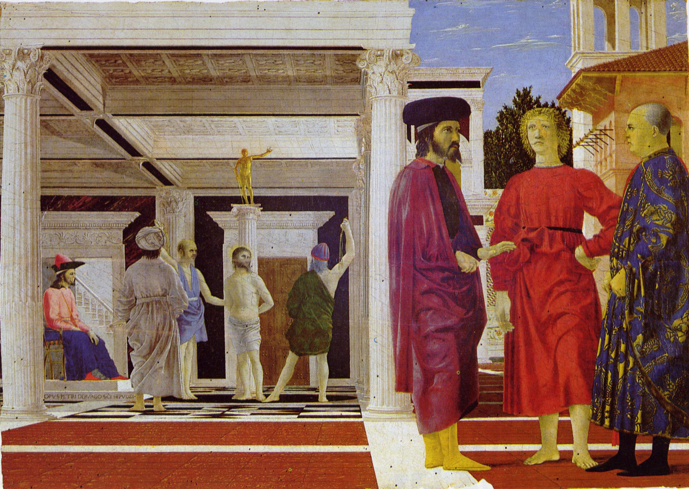
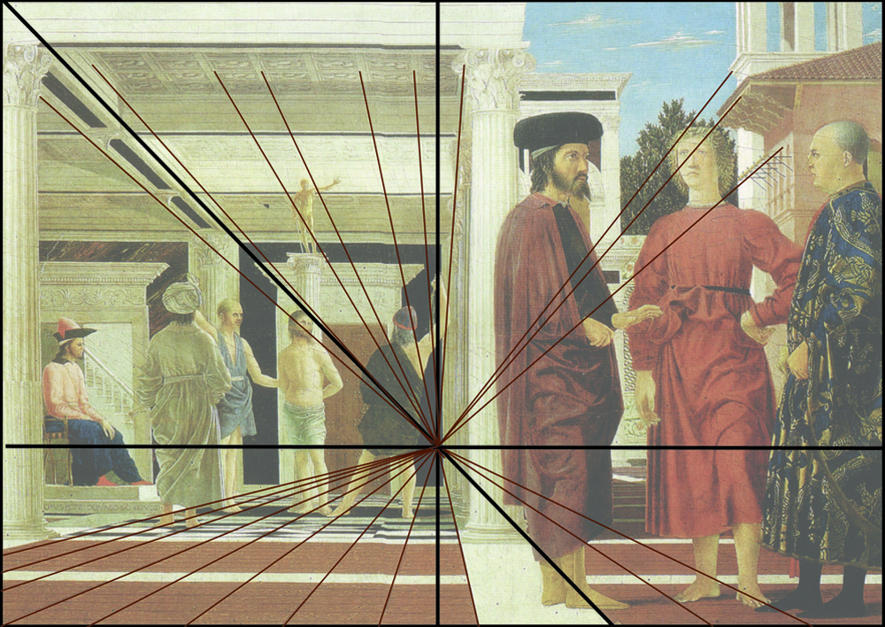
Le premier livre de mathématique dédié aux artistes est celui d'Albrecht Dürer, qui vulgarize les techniques italiennes en Allemagne. Il y explique par exemple comment construire et utiliser une machine à perspective, qui est essentiellement un algorithme analogue pour transformer des vrais objets 3D dans le vrai monde en illusions 2D sur papier.
Analogue = mécanisme isomorphe au vrai monde. Un cadran solaire, un globe terrestre, une Pascaline, la presse de Gutenberg, le viseur Norden ou l'ordinateur construit par Charles Babbage (à partir d'une machine à tisser) sont tous des instruments analogues. Antonyme du digital, car les mécanismes dans une machine digitale sont cachés en quelque sorte, formalisés et simulés dans une soupe mathématique. En bref, on fabrique une fausse version de la réalité qui apparaît grâce à des calculs qu'on opère sur un mécanisme métamorphe.
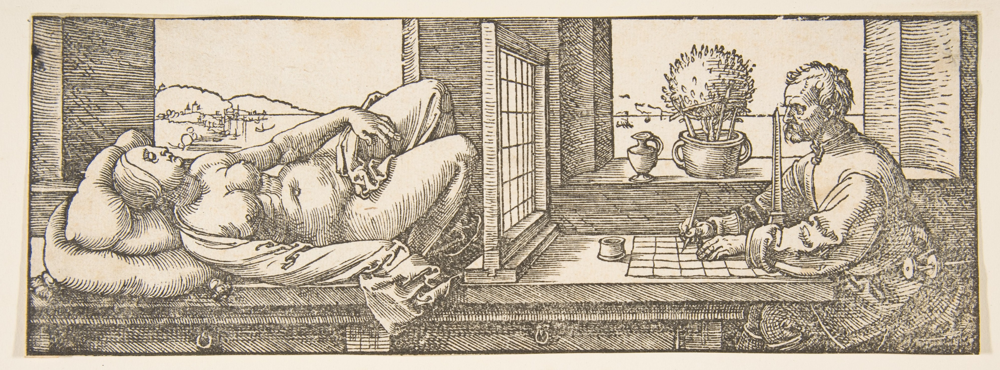
La perspective sonique! Le motet de Guillaume Dufay "Nuper rosarum flores" (1436) est écrit pour occasion de la consecration du dome de la cathédrale de Florence (par Brunelleschi!) et suit une structure précise avec le ratio 6:4:2:3 qui est le même que le ratio du temple de Salomon tel qu'il est décrit dans la Bible, ou ainsi que les dimensions du dome de Brunelleschi.
Eh oui! Car on est absolument obsédé par l'idée de la quête du chiffre parfait qui rassemblera toutes les facettes du monde sous un même chapiteau divin. On écrit à propos du "nombre d'or", qui est tiré de la séquence de Fibonacci; on peint tellement de Scènes et de crucifixions à perspective qu'on commence à croire que Dieu est en fait un géomètre-musicien qui fut construire le monde à partir d'un trouble obsessionnel compulsif autour de jolies formes imbriquées.
Et puis c'est l'humanisme de la renaissance, alors on tente de mettre l'homme au centre littéral de la géométrie divine:

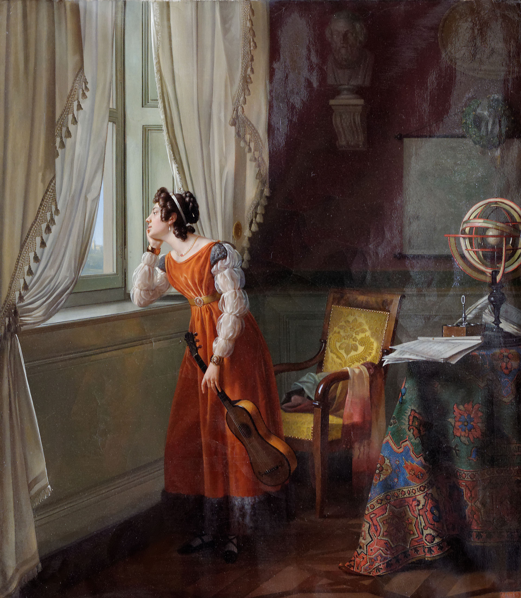
Le Baroque
On commence à s'amuser avec la perspective linéaire! Le but n'est plus d'être aussi prêt du réel que possible, mais de crâner à l'égard regardeur, parfois littéralement:

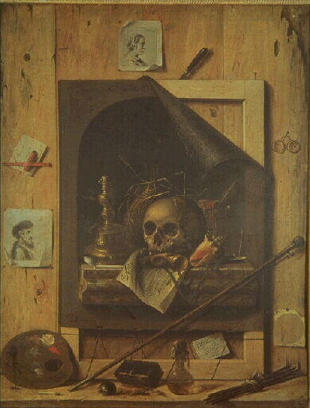
L'expression devient dramatique, exagérée, le but est de prestigiditer.
La quadratura, c'est la continuation d'architecture réelle dans une illusion optique. Le Jésuite Andrea Pozzo fit ainsi son plafond de Sant'Ignazio:
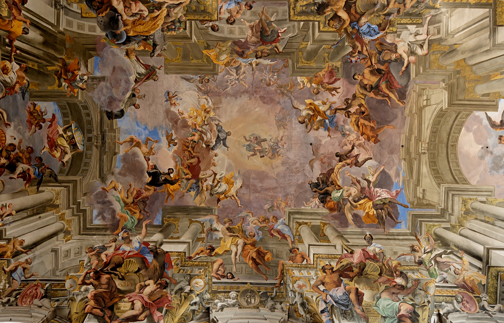
Enfin, regardez ce truc. Un faux palais entier semble érigé dans un ciel infini, et il y a toute une scène tirée d'Où est Charlie superimposée dessus! C'est l'optique spectaculaire.
Les mathématiques impliquées sont celles de la géométrie hyperbolique, c'est à dire non-euclidienne, c'est à dire qui prend une chose a priori droite, comme le regard de quelqu'un ou un filet de lumière, et prédit comment cette droite naviguerait un environment pas du tout plat, comme ici la forme hyperbolique par défaut, qui est la selle de cheval.
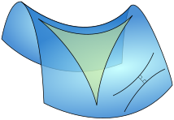
Les calculs qu'il faut opérer si on est artiste ont a voir avec les calculs qu'il faut opérer pour prédire le mouvement d'une droite sur cette plane. En fait, c'est la même mathématique: ce qui est beau avec l'art de la Renaissance, c'est qu'en émulant la réalité avec autant de fidélité que possible, il a fallu émuler la les maths qui régissent le monde, et par conséquence le monde académique de l'époque a fait des bonds en intuitions physiques.
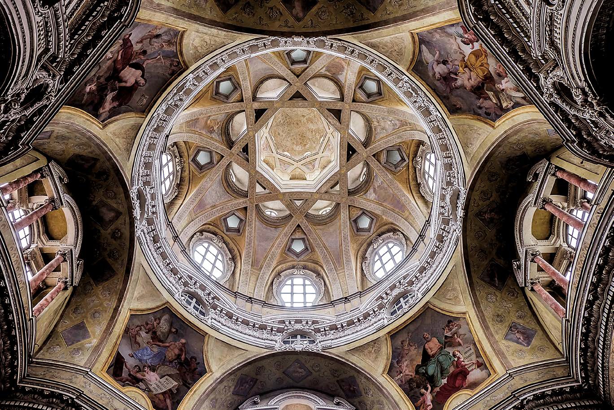
Mais pour une fois, l'échafaudage mathématique de l'art n'est pas que la géométrie ou les fractions tels qu'on l'a vu jusqu'ici. On badine avec la théorie des couleurs. C'est Newton qui publie en 1704 Opticks, une description du spectre de la lumière. Il invente le concept de la roue des couleurs, et d'autres théoriciens, comme Philippe de La Hire, prendront ses découvertes pour les appliquer à l'optimisation de la peinture par ses choix de couleurs, en se basant sur l'hypothèse que les couleurs, aussi, sont des facettes de l'harmonie universelle qui gouverne tout.
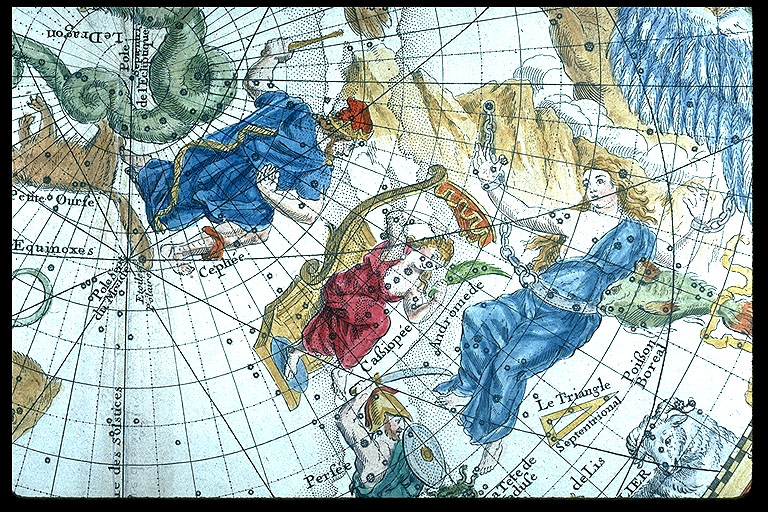
Même Goethe finira par écrire une Théorie des Couleurs, qu'il dressera contre Newton. Sa théorie est que la couleur est le résultat des transitions entre le blanc et le noir, et non des vaguelettes comme le postule Newton. C'est une espèce de métaphysique, plus artistique que scientifique car elle n'est simplement pas exacte.
Schopenhauer, Wittgenstein, et Bauhaus, entre autres, joindront le débat, présentant la théorie de Goethe comme un élément romantique s'opposant à la mécanisation du monde qu'on voit dans les Lumières.

L'ordre apollonien s'oppose effectivement au désordre dionysosien dans l'Histoire de l'art. Alors moi je ne parle que de la mathématisation de l'art, et non des contre-courants occasionnels qui souhaitent "revenir" à un mode sans structure, censé être plus authentique—mais je ne décris pas un long méandre unidirectionnel!
L'écriture automatique, la poésie de Byron, l'impressionnisme, l'opéra italien ou le symbolisme sont des exemples de ce même esprit philosophique qui réagit à la défensive face à la mathématisation. Il apparaît partout dans les interstices de ma présentation.
Bach!
Lui mérite sa propre section à lui tout seul.
Lumières!
L'Âge des Lumières valorise la raison, la clarté, et l'ordre, souvent en réaction à l'exubérance baroque. Retour à une certaine simplicité classique, mais informée par les découvertes scientifiques.
La géométrie descriptive (Gaspard Monge) permet de représenter des objets 3D sur un plan 2D avec précision, crucial pour l'ingénierie et l'architecture. L'optique et la théorie des couleurs continuent de progresser.

Aujourd'hui
L'art moderne et contemporain explose les conventions. La mathématique devient un outil, un sujet, ou une inspiration directe.
Le cubisme (Picasso, Braque) déconstruit la perspective, montrant plusieurs points de vue simultanément, jouant avec la géométrie et la dimensionnalité.

L'art fractal (généré par ordinateur) utilise des équations mathématiques pour créer des motifs infiniment complexes et auto-similaires.

La visualisation de données brouille la frontière entre l'art et la science, utilisant des principes mathématiques et statistiques pour créer des représentations esthétiques et informatives.
Des artistes comme M.C. Escher jouent explicitement avec la géométrie, les pavages, et les paradoxes visuels basés sur des concepts mathématiques.

Bref, la relation entre art et mathématique est plus diverse et explicite que jamais.
Pourquoi une telle lenteur?
C'est vrai, quoi! Entre les bisons et la perspective de Brunelleschi, il y a des dizaines de milliers d'années!
Plusieurs facteurs :
- Développement cognitif et culturel : Représenter le monde tel qu'on le voit (perspective) plutôt que symboliquement (importance = taille) n'est pas inné. Cela demande une certaine abstraction et un changement culturel dans le *but* de l'art (imiter la réalité vs. exprimer le sacré/pouvoir).
- Développement mathématique : La géométrie projective nécessaire à la perspective n'a été formalisée que bien plus tard. Les outils mathématiques évoluent lentement.
- Matériaux et techniques : Les techniques de peinture, les supports, les pigments évoluent, permettant plus de réalisme et de précision.
- Contexte social et philosophique : La Renaissance, avec son humanisme et son intérêt renouvelé pour l'observation du monde réel et les textes classiques (Euclide), a fourni le terreau idéal pour que ces idées émergent et soient valorisées.
Ce n'est pas que les anciens étaient moins intelligents, mais le contexte, les outils (mentaux et physiques), et les objectifs étaient différents.